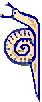
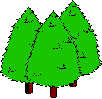
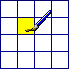
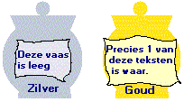
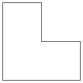
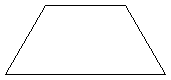
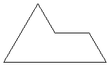
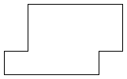
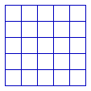
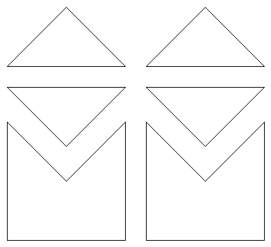

Klik hier om onze sponsor te bezoeken!
Eenvoudige Puzzeltjes
|

|
De puzzels zijn gemarkeerd met sterren ( ) die de moeilijkheidsgraad van de betreffende puzzle aangeven.
) die de moeilijkheidsgraad van de betreffende puzzle aangeven.
![[TERUG]](left.gif) terug naar de hoofd-puzzelpagina.
terug naar de hoofd-puzzelpagina.


i.
Stijgende Slak
Een slak bevindt zich op de bodem van een 20 meter diepe put.
Elke dag klimt de slak 5 meter omhoog, maar 's nachts glijdt hij weer 4 meter
terug naar beneden.
De Vraag:
Hoeveel dagen duurt het voordat de
slak de bovenrand van de put heeft bereikt?
Het Antwoord:
 Klik hier!...
Klik hier!...
![[OMHOOG]](back.gif) terug naar de index
terug naar de index
ii.
Gelijnde Getallen
Beschouw alle getallen waarvan de naam, in
blokletters geschreven, uit alleen rechte lijnstukken bestaat
(bijvoorbeeld 'EEN' bestaat uit elf rechte lijnstukken).
Slechts één van deze getallen heeft een waarde die gelijk
is aan het aantal lijnstukken dat nodig is om het in blokletters te
schrijven.
De Vraag:
Welk getal is dat?
Het Antwoord:
Klik hier!...
terug naar de index
iii.
Hans & Gerrie
Hans staat achter Gerrie en tegelijkertijd staat
Gerrie achter Hans.
De Vraag:
Hoe kan dit?
Het Antwoord:
Klik hier!...
terug naar de index

iv.
Abracadabra met Appels
In de klas van juf Miranda zitten elf kinderen.
Juf Miranda heeft een schaal met elf appels.
Juf Miranda wil de elf appels verdelen over de kinderen uit haar klas,
zodat ieder kind uiteindelijk een appel heeft,
maar er toch nog één appel in de schaal ligt.
De Vraag:
Kun jij juf Miranda helpen?
Het Antwoord:
Klik hier!...
terug naar de index
v.
Tour de France
De Vraag:
Als iemand in de Tour de France de tweede inhaalt, de hoeveelste is hij dan?
Het Antwoord:
Klik hier!...
terug naar de index
vi.
Ketting Kopen 
![[Nieuw!]](nieuw.gif)
Je hebt vijf stukken ketting, elk bestaande uit drie schakels.
Je wil één lange ketting maken uit deze vijf stukken.
Een schakel openbreken kost 1 euro, en een open schakel weer sluiten kost 3 euros.
De Vraag:
Is het mogelijk om één lange ketting te maken van de vijf stukken, als je
slechts 15 euro hebt?
Het Antwoord:
Klik hier!...
terug naar de index
vii.
Arm & Rijk
De armen hebben het,
de rijken hebben het nodig,
maar als je het eet, dan ga je dood.
De Vraag:
Wat is dit?
Het Antwoord:
Klik hier!...
terug naar de index
viii.
Bijzondere Broers
Jules en Vincent zijn broers.
"We zijn geboren binnen hetzelfde uur", zegt Jules, "op dezelfde dag van hetzelfde jaar."
"Maar", zegt Vincent, "we zijn geen tweeling!"
De Vraag:
Hoe is dit mogelijk?
Het Antwoord:
Klik hier!...
terug naar de index
ix.
Een, twee, drie
Gebruik makend van de cijfers 1 tot en met 9, kunnen drie getallen
(van drie cijfers elk) gemaakt worden, zodanig dat het tweede getal
het dubbele is van het eerste getal, en het derde getal het
driedubbele is van het eerste getal.
De Vraag:
Wat zijn deze drie getallen?
Het Antwoord:
Klik hier!...
terug naar de index

x.
Tien Bomen
Joyce heeft tien bomen gekocht voor haar tuin.
Ze wil deze bomen in vijf rijen planten, met in elke rij vier bomen.
De Vraag:
Hoe moet Joyce de bomen planten?
Het Antwoord:
Klik hier!...
Nog een Vraag:
De buurman van Joyce heeft negen bomen voor zijn tuin gekocht.
Hoe kan hij zijn negen bomen in tien rijen planten, met in elke rij drie bomen?
Nog een Antwoord:
Klik hier!...
terug naar de index

xi.
Gekleurd Grid
Een grid, bestaande uit vier rijen en vier kolommen (dus 16 vierkantjes),
moet ingekleurd worden. De inkleuring moet aan de volgende eisen voldoen:
- 4 vierkantjes moeten blauw zijn,
- 3 vierkantjes rood,
- 3 vierkantjes wit,
- 3 vierkantjes groen,
- 3 vierkantjes geel, en
- geen kleur mag méér dan eens in een kolom, rij, of op een diagonaal voorkomen.
De Vraag:
Hoe moet het grid worden ingekleurd?
Een Hint:
Klik hier!...
Het Antwoord:
Klik hier!...
terug naar de index
xii.
Opeenvolgende Objecten
De objecten in deze rij hebben iets gemeen:

Eén van de volgende drie objecten zou de opvolger
in de rij kunnen zijn.
De Vraag:
Wat is het volgende object voor de rij?
Het Antwoord:
Klik hier!...
terug naar de index

xiii.
Verhullende Vazen
Hiernaast zie je een gouden en een zilveren vaas.
Eén van deze vazen bevat een schat en de ander is leeg. Veronderstel dat je aan de hand van de
teksten op de vazen kunt achterhalen welke vaas de schat bevat.
De teksten op de vazen luiden als volgt:
De zilveren vaas: "Deze vaas is leeg."
De gouden vaas: "Precies één van deze teksten is waar."
De Vraag:
Welke vaas verhult de schat?
Het Antwoord:
Klik hier!...
terug naar de index
xiv.
Paarden Handel
Een man besluit om een mooi paard te kopen.
Hij betaalt 60 euro voor het paard, en hij is zeer tevreden met
het sterke dier. Na een jaar is de waarde van het paard gestegen tot
70 euro, en hij besluit om het paard te verkopen.
Maar binnen een paar dagen krijgt hij al spijt van de verkoop van
zijn mooie paard, en hij koopt het paard weer terug. Helaas moet
hij 80 euro betalen om het paard terug te krijgen, dus verliest
hij tien euro ten opzichte van zijn vorige verkoop.
Weer een jaar later besluit hij om het paard definitief te verkopen,
en wel voor maar liefst 90 euro.
De Vraag:
Hoeveel euro maakt de man winst?
Het Antwoord:
Klik hier!...
terug naar de index
xv.
Hotel Hocus
Drie zakenmannen stappen een hotel binnen om een
kamer te huren. De manager van het hotel vertelt hen dat er nog slechts
één kamer vrij is, maar dat ze die gezamenlijk kunnen
gebruiken voor slechts 30 euro per nacht. De drie zakenmannen geven
hem elk 10 euro en gaan naar hun kamer. Later besluit de manager
echter dat hij de zakenmannen te veel heeft laten betalen, dus hij roept
de bediende, geeft hem 5 losse euro's, en zegt: 'Geef deze vijf euro
aan de zakenmannen en vertel ze dat ik hen teveel heb laten betalen voor de
kamer'.
Op weg naar boven bedenkt de bediende dat hij de vijf losse euro's
nooit eerlijk kan verdelen onder de zakenmannen, dus stopt hij twee
euro's in zijn zak en geeft elke zakenman een euro terug.
Dit betekent dat elke zakenman dus 9 euro heeft betaald voor
de kamer.
Tevens hield de bediende twee euro.
Drie keer negen is 27 plus die twee euro is 29...... geen 30 !?......
De Vraag:
Wat is er met die laatste euro gebeurd?
Het Antwoord:
Klik hier!...
terug naar de index
xvi.
Tractatie Taart
De tractatie taart (zie plaatje) moet in acht
stukken worden verdeeld, maar je mag slechts drie keer snijden (drie
rechte sneden maken).
De Vraag:
Hoe kun je de taart in acht stukken verdelen met slechts drie rechte sneden?
Het Antwoord:
Klik hier!...
terug naar de index
xvii.
Boude Beweringen
Hieronder staat een aantal beweringen:
- Precies één van deze beweringen is onwaar.
- Precies twee van deze beweringen zijn onwaar.
- Precies drie van deze beweringen zijn onwaar.
- Precies vier van deze beweringen zijn onwaar.
- Precies vijf van deze beweringen zijn onwaar.
- Precies zes van deze beweringen zijn onwaar.
- Precies zeven van deze beweringen zijn onwaar.
- Precies acht van deze beweringen zijn onwaar.
- Precies negen van deze beweringen zijn onwaar.
- Precies tien van deze beweringen zijn onwaar.
|
De Vraag:
Welke van deze beweringen is waar?
Het Antwoord:
Klik hier!...
terug naar de index
xviii.
Zes Cijfers
Elk van de cijfers 1 tot en met 6 moet precies één keer gebruikt worden
in een vermenigvuldiging van de volgende vorm:
... × ... = ...
De Vraag:
Hoe moeten de zes cijfers worden geplaatst?
Het Antwoord:
Klik hier!...
terug naar de index

xix.
Vormen Verdelen
De vorm aan de rechterkant moet verdeeld worden in vier identieke stukken.
De Vraag:
Hoe kan je dit doen?
Het Antwoord:
Klik hier!...
Nog een Vraag:
De vorm hieronder moet verdeeld worden in vier identieke stukken (stukken kunnen "ondersteboven" zijn).

Er zijn twee manieren om dit te doen. Welke zijn die twee manieren?
Nog een Antwoord:
Klik hier!...
En nog een Vraag:
De vorm hieronder moet verdeeld worden in vier identieke stukken (stukken kunnen "ondersteboven" zijn).

Hoe kan dit worden gedaan?
En nog een Antwoord:
Klik hier!...
De Vierde Vraag:
De vorm hieronder moet verdeeld worden in drie identieke stukken.

Hoe kan dit worden gedaan?
Het Vierde Antwoord:
Klik hier!...
terug naar de index

xx.
Vierkant Verknippen
Hiernaast zie je een vierkant van 5 bij 5 vakjes.
Het is de bedoeling om het vierkant langs de lijnen in vier stukken te verdelen,
zodanig dat je met die vier stukken twee kleinere vierkanten kunt vormen,
zonder daarbij de stukken te hoeven draaien.
De Vraag:
Hoe moet dit gedaan worden?
Het Antwoord:
Klik hier!...
terug naar de index
xxi.
Plus Puzzel
De zes puzzelstukken hieronder kunnen gecombineerd worden tot een symmetrisch
plusteken.

De Vraag:
Hoe kan dit worden gedaan?
Het Antwoord:
Klik hier!...
terug naar de index
xxii.
Rare Reeks
Hier is een reeks met getallen:
1 11 21 1211 111221
Dit lijkt een vreemde reeks, maar toch zit er een systeem achter...
De Vraag:
Wat is het volgende element in deze reeks?
Het Antwoord:
Klik hier!...
Nog een Vraag:
Hier is een andere reeks met getallen:
1 11 21 1211 1231 131221
Wat is het volgende element in deze reeks?
Nog een Antwoord:
Klik hier!...
terug naar de index
xxiii.
Tien Zinnen
Gegeven de volgende puzzel:
Het aantal keer dat het cijfer 0 in deze puzzel voorkomt is _____.
Het aantal keer dat het cijfer 1 in deze puzzel voorkomt is _____.
Het aantal keer dat het cijfer 2 in deze puzzel voorkomt is _____.
Het aantal keer dat het cijfer 3 in deze puzzel voorkomt is _____.
Het aantal keer dat het cijfer 4 in deze puzzel voorkomt is _____.
Het aantal keer dat het cijfer 5 in deze puzzel voorkomt is _____.
Het aantal keer dat het cijfer 6 in deze puzzel voorkomt is _____.
Het aantal keer dat het cijfer 7 in deze puzzel voorkomt is _____.
Het aantal keer dat het cijfer 8 in deze puzzel voorkomt is _____.
Het aantal keer dat het cijfer 9 in deze puzzel voorkomt is _____.
|
De zinnen moet aangevuld worden met cijfers zodat ze allemaal waar zijn.
De Vraag:
Welke twee oplossingen zijn er?
Het Antwoord:
Klik hier!...
terug naar de index

Click Here to Visit our Sponsor
Copyright © 1996-2005. RJE-productions. All rights reserved.